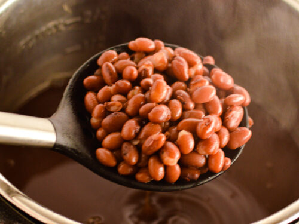

Creamy Red Beans

Red Beans Recipe
We are going to make some creamy red beans with a spicy touch to make it even better n_n.
Ingridients
- Red beans "as many as you want"
- parsley
- chopped garlic
- 1/2 chopped onion
- salt
- water
- spice chilli pepper
Steps
- Place beans in a cooking pot and make it half of water
- add the salt, parsley, garlic, onion and red chilli pepper
- let it boil until gets as creamy as you want, if not creamy enough keep adding smalls amounts of water until you get the desired consistency